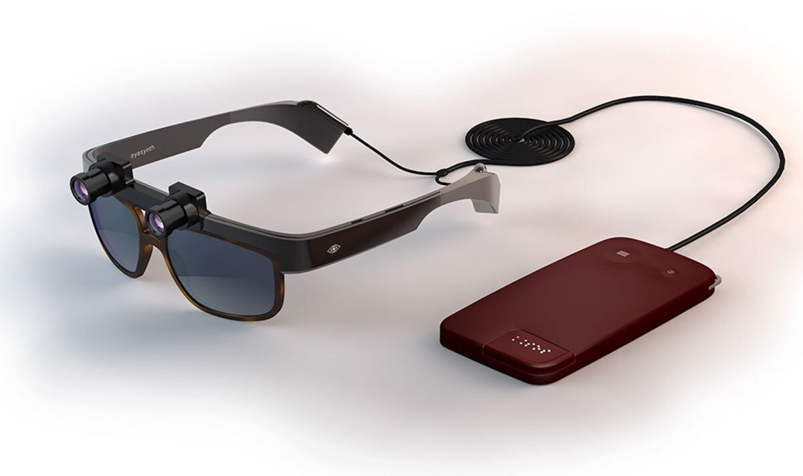

Gafas Inteligentes
La ceguera es un problema grave en nuestro país. Se estima que sólo en España hay 75.000 personas invidentes, y casi un millón de españoles con discapacidad visual. En Europa estos números aumentan hasta los 6.9 millones y 246 millones, respectivamente.
Las nuevas tecnologías pueden servir para hacer la vida más fácil a los invidentes. Gracias a nuevas tecnologías como Orcam MyEye 2.0, muchas personas pueden disfrutar de ventajas de las que no dispondrían sin estos nuevos dispositivos hardware.

Las TIC, un aliado para personas con discapacidad
Las TIC, siglas que provienen de la tecnología de la información y comunicación, se han ganado un hueco prioritario en nuestro día a día y en nuestras actividades rutinarias. Actividades tan básicas como la educación y la relación con otras personas se han visto modificadas por estas tecnologías, haciendo que todo sea mucho más sencillo.
Toda esta revolución tecnológica que ha llegado ha sido recibida con los brazos abiertos por todos los ciudadanos pero, lo cierto, es que el colectivo que más se ha beneficiado de ella ha sido el de las personas que padecen una discapacidad.
Las TIC, además de hacer más accesible la información y potenciar las capacidades de las personas, en el caso de personas con discapacidad, han ayudado a que sus dificultades se vieran paliadas y, en algunos casos, sus limitaciones se redujeran al mínimo. Entre sus muchas ventajas, se pueden destacar las siguientes